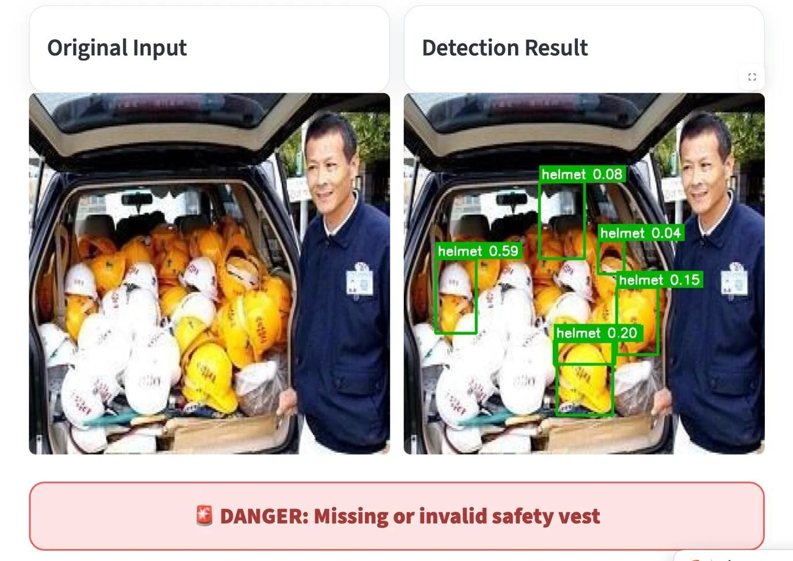

02 / Computer Vision · Application Engineering
把目标检测，
接入安全检查流程。
PPE Safety Monitor：识别安全帽与反光背心，将检测框、阈值调节和风险提示整合进可交互的 Streamlit 原型。
PythonPyTorchYOLOv8sOpenCVStreamlit
4 类helmet / no_helmet / vest / no_vest
0.838YOLOv8s mAP@50 · 报告指标
3 种检测模型对比
团队项目 · 我的工作：Faster R-CNN / SSD300 训练测试、界面设计调试、检测效果与失败案例分析。
先看实际效果
项目原始输出 · 非模拟推理来自提交项目的检测结果视频，已转为浏览器兼容格式。下载视频
本页展示预先生成的真实检测结果，不会对访客上传的图片运行推理。完整图片 / 视频检测、参数调节和 CSV 导出可通过源码在 Python 环境中运行。
从模型到应用
输入 → 识别 → 规则 → 反馈图片 / 视频帧YOLO 检测裁剪补检与 NMS分类阈值过滤风险提示与结果展示

关键工程方法
小目标漏检
局部裁剪提高安全帽在输入中的相对尺寸；将框映射回原图，再按类别去重。
不同类别的取舍
安全帽、背心与负例分别设置阈值。阈值降低可能增加误检，需要结合业务结果评估。
可观察的结果
展示接受与忽略的检测证据、风险规则结果及当前扫描记录，方便调试。
为什么选择 YOLOv8s？
报告中的检测指标显示其整体表现最好。速度不能只看模型名称：还取决于设备、输入尺寸和后处理，YOLO 的 FPS 在原表中没有填写。
| Model | Precision | Recall | mAP@50 | mAP@50–95 | FPS |
|---|---|---|---|---|---|
| YOLOv8s | 0.804 | 0.818 | 0.838 | 0.5666 | 未报告 |
| Faster R-CNN | 0.5601 | 0.7802 | 0.6976 | 0.3945 | 40.01 |
| SSD300 | 0.7312 | 0.5307 | 0.6338 | 0.3361 | 87.24 |
来源：Project-FinalReport，第 14 页。此处为原报告结果，不是本次部署重新测量；FPS 的跨模型比较需统一测量条件。
Failure analysis
看见安全帽，
不等于正确佩戴。
背景中堆放的装备，也可能被正确识别为装备，却导致错误的合规结论。
当前源码的人员分组为横向位置启发式方法。多人拥挤、遮挡和背景装备仍可能造成误判；这是研究原型，不应直接用于实际门禁放行。
下一步：人员与装备关联、未知状态、跨帧稳定性，以及“错误放行 / 错误报警”的业务评估。

查看与复现
公开源码包含哪些内容？
Streamlit 应用、最终 best.pt 模型、依赖、运行说明和关键逻辑注释。Faster R-CNN / SSD 的训练 Notebook 未包含在本次提供的应用包中。
有哪些功能边界？
摄像头输入为快照；门禁状态为界面模拟；当前 CSV 为当前扫描结果；视频汇总使用末帧。在线本页仅播放已有结果，不提供服务器推理。